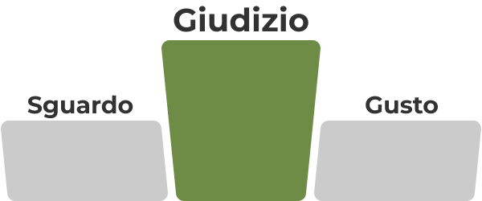
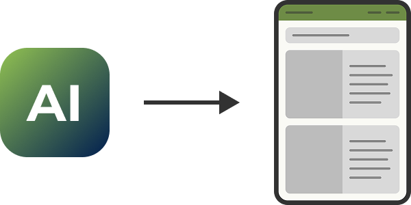
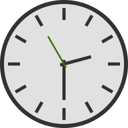

Giudizio

Dopo sguardo e gusto la parola che sta emergendo è giudizio. Il giudizio risponde alla domanda; se è la cosa giusta da fare e richiede la capacità di spiegare perché una cosa non convince.
Un'interfaccia risponde anche quando la stiamo costruendo. Più tempo passiamo su una schermata a provare diverse soluzioni è più si forma il nostro giudizio, come scrive Takuma Kakehi in “Access Is Not Mastery”: un giudizio si costruisce in anni di contatto con ciò che non ha funzionato.
Anche perché un generatore di interfacce riduce i tempi necessari per produrre una schermata saltando molte decisioni che prima ero costretto a prendere e avvolte accelera le mie dimenticanze e non aiuta a colmarle.


Quel tempo bisogna prenderselo prima o poi. Fino a quando qualcuno dovrà rispondere di quello che si è fatto.